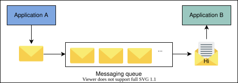
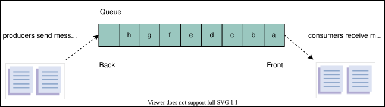
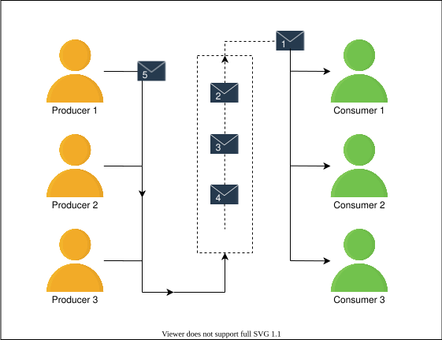
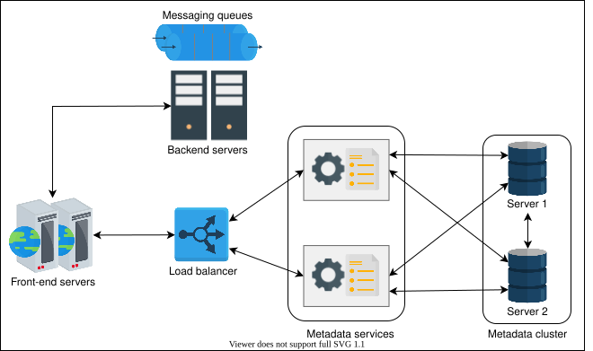
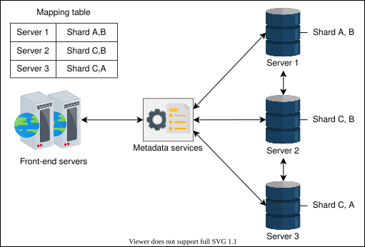
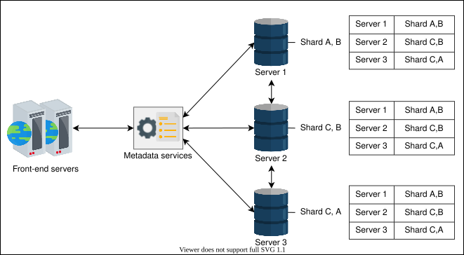
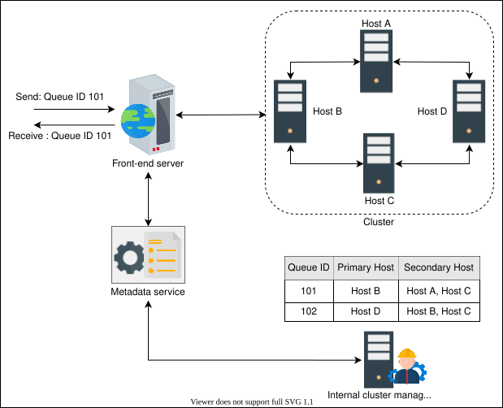
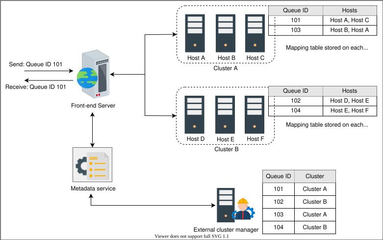

17. Distributed Messaging Queue
System Design: The Distributed Messaging Queue
System Design: The Distributed Messaging Queue
Learn about the messaging queue, why we use it, and important use cases.
What is a messaging queue?#
A messaging queue is an intermediate component between the interacting entities known as producers and consumers. The producer produces messages and places them in the queue, while the consumer retrieves the messages from the queue and processes them. There might be multiple producers and consumers interacting with the queue at the same time.
Here is an illustration of two applications interacting via a single messaging queue:

Motivation#
A messaging queue has several advantages and use cases.
-
Improved performance: Improved performance: A messaging queue enables asynchronous communication between the two interacting entities, producers and consumers, and eliminates their relative speed difference. A producer puts messages in the queue without waiting for the consumers. Similarly, a consumer processes the messages when they become available. Moreover, queues are often used to separate out slower operations from the critical path and, therefore, help reduce client-perceived latency. For example, instead of waiting for a specific task that’s taking a long time to complete, the producer process sends a message, which is kept in a queue if there are multiple requests, for the required task and continues its operations. The consumer can notify us about the fate of the processing, whether a success or failure, by using another queue.
-
Better reliability: The separation of interacting entities via a messaging queue makes the system more fault tolerant. For example, a producer or consumer can fail independently without affecting the others and restart later. Moreover, replicating the messaging queue on multiple servers ensures the system’s availability if one or more servers are down.
-
Granular scalability: Asynchronous communication makes the system more scalable. For example, many processes can communicate via a messaging queue. In addition, when the number of requests increases, we distribute the workload across several consumers. So, an application is in full control to tweak the number of producer or consumer processes according to its current need.
-
Easy decoupling: A messaging queue decouples dependencies among different entities in a system. The interacting entities communicate via messages and are kept unaware of each other’s internal working mechanisms.
-
Rate limiting: Messaging queues also help absorb any load spikes and prevent services from becoming overloaded, acting as a rudimentary form of rate limiting when there is a need to avoid dropping any incoming request.
-
Priority queue: Multiple queues can be used to implement different priorities—for example, one queue for each priority—and give more service time to a higher priority queue.
Messaging queue use cases#
A messaging queue has many use cases, both in single-server and distributed environments. For example, it can be used for interprocess communication within one operating system. It also enables communication between processes in a distributed environment. Some of the use cases of a messaging queue are discussed below.
-
Sending many emails: Emails are used for numerous purposes, such as sharing information, account verification, resetting passwords, marketing campaigns, and more. All of these emails written for different purposes don’t need immediate processing and, therefore, they don’t disturb the system’s core functionality. A messaging queue can help coordinate a large number of emails between different senders and receivers in such cases.
-
Data post-processing: Many multimedia applications need to process content for different viewer needs, such as for consumption on a mobile phone and a smart television. Oftentimes, applications upload the content into a store and use a messaging queue for post-processing of content offline. Doing this substantially reduces client-perceived latency and enables the service to schedule the offline work at some appropriate time—probably late at night when the compute capacity is less busy.
-
Recommender systems: Some platforms use recommender systems to provide preferred content or information to a user. The recommender system takes the user’s historical data, processes it, and predicts relevant content or information. Since this is a time-consuming task, a messaging queue can be incorporated between the recommender system and requesting processes to increase and quicken performance.
How do we design a distributed messaging queue?#
We divide the design of a distributed messaging queue into the following five lessons:
- Requirements: Here, we focus on the functional and non-functional requirements of designing a distributed messaging queue. We also discuss a single server messaging queue and its drawbacks in this lesson.
- Design consideration: In this lesson, we discuss some important factors that may affect the design of a distributed messaging queue—for example, the order of placing messages in a queue, their extraction, their visibility in the queue, and the concurrency of incoming messages.
- Design: In this lesson, we discuss the design of a distributed messaging queue in detail. We also describe the process of replication of queues and the interaction between various building blocks involved in the design.
- Evaluation: In this lesson, we evaluate the design of a distributed messaging queue based on its functional and non-functional requirements.
- Quiz: At the end of the chapter, we evaluate understanding of the design of a distributed messages queue via a quiz.
Let’s start by understanding the requirements of designing a distributed messaging queue.
Requirements of a Distributed Messaging Queue’s Design
Requirements of a Distributed Messaging Queue’s Design
Learn about the requirements of designing a distributed messaging queue using a strawman solution.
Requirements#
In a distributed messaging queue, data resides on several machines. Our aim is to design a distributed messaging queue that has the following functional and non-functional requirements.
Functional requirements#
Listed below are the actions that a client should be able to perform:
-
Queue creation: The client should be able to create a queue and set some parameters—for example, queue name, queue size, and maximum message size.
-
Send message: Producer entities should be able to send messages to a queue that’s intended for them.
-
Receive message: Consumer entities should be able to receive messages from their respective queues.
-
Delete message: The consumer processes should be able to delete a message from the queue after a successful processing of the message.
-
Queue deletion: Clients should be able to delete a specific queue.
Non-functional requirements#
Our design of a distributed messaging queue should adhere to the following non-functional requirements:
-
Durability: The data received by the system should be durable and shouldn’t be lost. Producers and consumers can fail independently, and a queue with data durability is critical to make the whole system work, because other entities are relying on the queue.
-
Scalability: The system needs to be scalable and capable of handling the increased load, queues, producers, consumers, and the number of messages. Similarly, when the load reduces, the system should be able to shrink the resources accordingly.
-
Availability: The system should be highly available for receiving and sending messages. It should continue operating uninterrupted, even after the failure of one or more of its components.
-
Performance: The system should provide high throughput and low latency.
Single-server messaging queue#
Before we embark on our journey to map out the design of a distributed messaging queue, we should recall how queues are used within a single server where the producer and consumer processes are also on the same node. A producer or consumer can access a single-server queue by acquiring the locking mechanism to avoid data inconsistency. The queue is considered a critical section where only one entity, either the producer or consumer, can access the data at a time.
However, several aspects restrain us from using the single-server messaging queue in today’s distributed systems paradigm. For example, it becomes unavailable to cooperating processes, producers and consumers, in the event of hardware or network failures. Moreover, performance takes a major hit as contention on the lock increases. Furthermore, it is neither scalable nor durable.

Point to Ponder
Question
Can we extend the design of a single-server messaging queue to a distributed messaging queue?
Building blocks we will use#
The design of a distributed messaging queue utilizes the following building blocks:
- Database(s) will be required to store the metadata of queues and users.
- Caches are important to keep frequently accessed data, whether it be data pertaining to users or queues metadata.
- Load balancers are used to direct incoming requests to servers where the metadata is stored.
In our discussion on messaging queues, we focused on their functional and non-functional requirements. Before moving on to the process of designing a distributed messaging queue, it’s essential for us to discuss some key considerations and challenges that may affect the design.
Considerations of a Distributed Messaging Queue’s Design
Considerations of a Distributed Messaging Queue’s Design
Learn about the factors that affect the design of a messaging queue.
Before embarking on our journey to design a distributed messaging queue, let’s discuss some major factors that could significantly affect the design. These include the order of messages, the effect of the ordering on performance, and the management of concurrent access to the queue. We discuss each of these factors in detail below.
Ordering of messages#
A messaging queue is used to receive messages from producers. These messages are consumed by the consumers at their own pace. Some operations are critical in that they require strict ordering of the execution of the tasks, driven by the messages in the queue. For example, while chatting over a messenger application with a friend, the messages should be delivered in order; otherwise, such communication can be confusing, to say the least. Similarly, emails received by a user from different users may not require strict ordering. Therefore, in some cases, the strict order of incoming messages in the queue is essential, while many use cases can tolerate some reordering.
Let’s discuss the following two categories of messages ordering in a queue:
- Best-effort ordering
- Strict ordering
Best-effort ordering#
With the best-effort ordering approach, the system puts the messages in a specified queue in the same order that they’re received.
For example, as shown in the following figure, the producer sends four messages, A, B, C, and D, in the same order as illustrated. Due to network congestion or some other issue, message B is received after message D. Hence, the order of messages is A, C, D, and B at the receiving end. Therefore, in this approach, the messages will be put in the queue in the same order they were received instead of the order in which they were produced on the client side.

Strict ordering#
The strict ordering technique preserves the ordering of messages more rigorously. Through this approach, messages are placed in a queue in the order that they’re produced.
Before putting messages in a queue in the correct sequence, it’s crucial to have a mechanism to identify the order in which the messages were produced on the client side. Often, a unique identifier or time-stamp is used to mark a message when it’s produced.
Point to Ponder
Question
Who’ll be responsible for providing the sequence numbers?
One of the following three approaches can be used for ordering incoming messages:
-
Monotonically increasing numbers: One way to order incoming messages is to assign monotonically increasing numbers to messages on the server side. When the first message arrives, the system assigns it a number, such as 1. It then assigns the number 2 to the second message, and so on.
However, there are potential drawbacks to this approach. First, when a burst of requests is received, it acts as a bottleneck that affects the system’s performance because the system has to assign an ID in a specified sequence to a message while the other messages wait for their turn.
Second, it still doesn’t tackle the problem that arises when a message is received before the one that’s produced earlier at the client side. Because of this, it doesn’t guarantee that it will generate the correct order for the messages produced at the client side.
-
Causality-based sorting at the server side: Keeping in view the drawbacks of using monotonically increasing numbers, another approach that can be used for time-stamping and ordering of incoming messages is causality-based sorting. In this approach, messages are sorted based on the time stamp that was produced at the client side and are put in a queue accordingly. The major drawback of this approach is that for multiple client sessions, the service can’t determine the order in terms of wall-clock time.
-
Using time stamps based on synchronized clocks: To tackle the potential issues that arise with both of the approaches described above, we can use another appropriate method to assign time stamps to messages that’s based on synchronized clocks. In this approach, the time stamp (ID) provided to each message through a synchronized clock is unique and in the correct sequence of production of messages. We can tag a unique process identifier with the time stamp to make the overall message identifier unique and tackle the situation when two concurrent sessions ask for a time stamp at the exact same time. Moreover, with this approach, the server can easily identify delayed messages based on the time stamp and wait for the delayed messages.
As we discussed in the section on the sequencer building block, we can get sequence numbers that fulfill double duty as sequence numbers and globally synchronized wall clock time stamps. Using this approach, our service can globally order messages across client sessions as well.
To conclude, the most appropriate mechanism to provide a unique ID or time stamp to incoming messages, from among the three approaches described above, involves the use of synchronized clocks.
Sorting#
Once messages are received at the server side, we need to sort them based on their time stamps. Therefore, we use an appropriate online sorting algorithm for this purpose.
Point to Ponder
Question
Suppose that a message sent earlier arrives late due to a network delay. What would be the proper approach to handle such a situation?
Effect on performance#
Primarily, a queue is designed for first-in, first-out (FIFO) operations;. First-in, first-out operations suggest that the first message that enters a queue is always handed out first. However, it isn’t easy to maintain this strict order in distributed systems. Since message A was produced before message B, it’s still uncertain that message A will be consumed before message B. Using monotonically increasing message identifiers or causality-bearing identifiers provide high throughput while putting messages in a queue. Though the need for the online sorting to provide a strict order takes some time before messages are ready for extraction. To minimize latency caused by the online sorting, we use a time-window approach.
Similarly, for strict ordering at the receiving end, we need to serialize all the requests to give out messages one by one. If that’s not required, we have better throughput and lower latency at the receiving end.
Due to the reasons mentioned above, many distributed messaging queue solutions either don’t guarantee a strict order or have limitations around throughput. As we saw previously, the queues have to perform many additional validations and coordination operations to maintain the order.
Managing concurrency#
Concurrent queue access needs proper management. Concurrency can take place at the following stages:
-
When multiple messages arrive at the same time.
-
When multiple consumers request concurrently for a message.
The first solution is to use the locking mechanism. When a process or thread requests a message, it should acquire a lock for placing or consuming messages from the queue. However, as was discussed earlier, this approach has several drawbacks. It’s neither scalable nor performant.
Another solution is to serialize the requests using the system’s buffer at both ends of the queue so that incoming messages are placed in an order and consumer processes also receive messages in their arrival sequence. This is a more viable solution because it can help us avoid the occurrence of race conditions.
Applications might use multiple queues with dedicated producers and consumers to keep the ordering cost per queue under check, although this comes at the cost of more complicated application logic.

In this lesson, we discussed some key considerations and challenges in the design process of a messaging queue and answered the following questions:
- Why is the order of messages important, and how do we enforce that order?
- How does ordering affect performance? How do we handle concurrency while accessing a queue?
Now, we are ready to start designing a distributed messaging queue.
Design of a Distributed Messaging Queue: Part 1
Design of a Distributed Messaging Queue: Part 1
Learn about the high-level design of a messaging queue and how to scale the metadata of queues.
We'll cover the following
So far, we’ve discussed the requirements and design considerations of a distributed messaging queue. Now, let’s begin with learning about the high-level design of a distributed messaging queue.
Distributed messaging queue#
Unlike a single-server messaging queue, a distributed messaging queue resides on multiple servers. A distributed messaging queue has its own challenges. However, it resolves the drawbacks of a single-server messaging queue if designed properly.
The following sections focus on the scalability, availability, and durability issues of designing a distributed messaging queue by introducing us to a more fault-tolerant architecture of a messaging queue.
High-level design#
Before diving deep into the design, let’s assume the following points to make the discussion more simple and easy to understand. In the upcoming material, we discuss how the following assumptions enable us to eliminate the problems in a single-server solution to the messaging queue.
-
Queue data is replicated using either a primary-secondary or quorum-like system inside a cluster (read through the Data Replication lesson for more details). Our service can use data partitioning if the queue gets too long to fit on a server. We can use a consistent hashing-like scheme for this purpose, or we may use a key-value store where the key might be the sequence numbers of the messages. In that case, each shard is appropriately replicated (refer to the Partition lesson for more details on this).
-
We also assume that our system can auto-expand and auto-shrink the resources as per the need to optimally utilize resources.
The following figure demonstrates a high-level design of a distributed messaging queue that’s composed of several components.

The essential components of our design are described in detail below.
Load balancer#
The load balancer layer receives requests from producers and consumers, which are forwarded to one of the front-end servers. This layer consists of numerous load balancers. Therefore, requests are accepted with minimal latency and offer high availability.
Front-end service#
The front-end service comprises stateless machines distributed across data centers. The frontend provides the following services:
-
Request validation: This ensures the validity of a request and checks if it contains all the necessary information.
-
Authentication and authorization: This service checks if the requester is a valid user and if these services are authorized for use to a requester.
-
Caching: In the front-end cache, metadata information is stored related to the frequently used queues. Along with this, user-related data is also cached here to reduce request time to authentication and authorization services.
-
Request dispatching: The frondend is also responsible for calling two other services, the backend and the metadata store. Differentiating calls to both of these services is one of the responsibilities of the frontend.
-
Request deduplication: The frontend also tracks information related to all the requests, therefore, it also prevents identical requests from being put in a queue. Deciding what to do about duplicates might be as easy as searching a hash key in a store. If something is found in the store, this implies a duplicate and the message can be rejected.
-
Usage data collection: This refers to the collection of real-time data that can be used for audit purposes.
Metadata service#
This component is responsible for storing, retrieving, and updating the metadata of queues in the metadata store and cache. Whenever a queue is created or deleted, the metadata store and cache are updated accordingly. The metadata service acts as a middleware between the front-end servers and the data layer. Since the metadata of the queues is kept in the cache, the cache is checked first by the front-end servers for any relevant information related to the receipt of the request. If a cache miss occurs, the information is retrieved from the metadata store and the cache is updated accordingly.
There are two different approaches to organizing the metadata cache clusters:
- If the metadata that needs to be stored is small and can reside on a single machine, then it’s replicated on each cluster server. Subsequently, the request can be served from any random server. In this approach, a load balancer can also be introduced between the front-end servers and metadata services.

- If the metadata that needs to be stored is too large, then one of the following modes can be followed:
- The first strategy is to use the sharding approach to divide data into different shards. Sharding can be performed based on some partition key or hashing techniques, as was discussed in the lesson on database partitioning. Each shard is stored on a different host in the cluster. Moreover, each shard is also replicated on different hosts to enhance availability. In this cluster-organization approach, the front-end server has a mapping table between shards and the hosts. Therefore, the front-end server is responsible for redirecting requests to the host where the data is stored.

- The second approach is similar to the first one. However, the mapping table in this approach is stored on each host instead of just on the front-end servers. Because of this, any random host can receive a request and forward it to the host where the data resides. This technique is suitable for read-intensive applications.

In our discussion on distributed messaging queues, we focused on the high-level design of this type of queue. Furthermore, we explored each component in the high-level design, including the following:
- Front-end servers and the services required of them for smooth operations.
- Load balancers.
- Metadata services.
- Metadata clusters and their organization.
A vital part of the design is the organization of servers at the backend for queue creation, deletion, and other such operations. The next lesson focuses on the organization of back-end servers and the management of queues, along with other important operations related to message delivery and retrieval.
Design of a Distributed Messaging Queue: Part 2
Design of a Distributed Messaging Queue: Part 2
Learn about the detailed design of a messaging queue and its management at the back-end servers.
We'll cover the following
In the previous lesson, we discussed the responsibilities of front-end servers and metadata services. In this lesson, we’ll focus on the main part of the design where the queues and messages are stored: the back-end service.
Back-end service#
This is the core part of the architecture where major activities take place. When the frontend receives a message, it refers to the metadata service to determine the host where the message needs to be sent. The message is then forwarded to the host and is replicated on the relevant hosts to overcome a possible availability issue. The message replication in a cluster on different hosts can be performed using one of the following two models:
- Primary-secondary model
- A cluster of independent hosts
Before delving into the details of these models, let’s discuss the two types of cluster managers responsible for queue management: internal and external cluster managers. The differences between these two cluster managers are shown in the following table.
Internal Cluster Manager | External Cluster Manager |
It manages the assignment of queues within a cluster. | It manages the assignment of queues across clusters. |
It knows about each and every node within a cluster. | It knows about each cluster. However, it doesn’t have information on every host that’s present inside a cluster. |
It listens to the heartbeat from each node. | It monitors the health of each independent cluster. |
It manages host failure, instance addition, and removals from the cluster. | It manages and utilizes clusters. |
It partitions a queue into several parts and each part gets a primary server. | It may split a queue across several clusters, so that messages for the same queue are equally distributed between several clusters. |
Primary-secondary model#
In the primary-secondary model, each node is considered a primary host for a collection of queues. The responsibility of a primary host is to receive requests for a particular queue and be fully responsible for data replication. The request is received by the frontend, which in turn communicates with the metadata service to determine the primary host for the request.
For example, suppose we have two queues with the identities 101 and 102 residing on four different hosts A, B, C, and D. In this example, instance B is the primary host of queue 101 and the secondary hosts where the queue 101 is replicated are A and C. As the frontend receives message requests, it identifies the primary server from the internal cluster manager through the metadata service. The message is retrieved from the primary instance, which is also responsible for deleting the original message upon usage and all of its replicas.
As shown in the following illustration, the internal cluster manager is a component that’s responsible for mapping between the primary host, secondary hosts, and queues. Moreover, it also helps in the primary host selection. Therefore, it needs to be reliable, scalable, and performant.

A cluster of independent hosts#
In the approach involving a cluster of independent hosts, we have several clusters of multiple independent hosts that are distributed across data centers. As the frontend receives a message, it determines the corresponding cluster via the metadata service from the external cluster manager. The message is then forwarded to a random host in the cluster, which replicates the message in other hosts where the queue is stored.
Point to Ponder
Question
How does a random host within a cluster replicate data—that is, messages—in the queues on other hosts within the same cluster?
The same process is applied to receive message requests from the consumer. Similar to the first approach, the randomly selected host is responsible for message delivery and cleanup upon a successful processing of the message.
Furthermore, another component called an external cluster manager is introduced, which is accountable for maintaining the mapping between queues and clusters, as shown in the following figure. The external cluster manager is also responsible for queue management and cluster assignment to a particular queue.
The following figure illustrates the cluster of independent hosts. There are two clusters, A and B, which consist of several nodes. The external cluster manager has the mapping table between queues and their corresponding cluster. Whenever a frontend receives a request for a queue, it determines the corresponding cluster for the queue and forwards the request to the cluster where the queue resides. The nodes within that cluster are responsible for storing and sending messages accordingly.

Point to Ponder
Question
What kind of anomalies can arise while replicating messages on other hosts?
We have completed the design of a distributed messaging queue and discussed the two models for organizing the back-end server. We also described the management process of queues and how messages are processed at the backend. Furthermore, we discussed how back-end servers are managed through different cluster managers.
In the next lesson, we discuss how our system fulfills the functional and non-functional requirements that were described earlier in the chapter.
Evaluation of a Distributed Messaging Queue’s Design
Evaluation of a Distributed Messaging Queue’s Design
Evaluate the proposed system based on the functional and non-functional requirements of a distributed messaging queue.
We'll cover the following
We completed the process of designing a distributed messaging queue. Now, let’s analyze whether the design met the functional and non-functional requirements of a distributed messaging queue.
Functional requirements#
-
Queue creation and deletion: When a request for a queue is received at the frontend, the queue is created with all the necessary details provided by the client after undergoing some essential checks. The corresponding cluster manager assigns servers to the newly created queue and updates the information in the metadata stores and caches through a metadata service.
Similarly, the queue is deleted when the client doesn’t need it anymore. The responsible cluster manager deallocates the space occupied by the queue and, consequently, deletes the data from all the metadata stores and caches.
Point to Ponder
Question
How do we handle messages that can’t be processed—here meaning consumed—after maximum processing attempts by the consumer?
- Send and receive messages: Producers can deliver messages to specific queues once they are created. At the backend, receiving messages are sorted based on time stamps to preserve their order and are placed in the queue. Similarly, a consumer can retrieve messages from a specified queue.
When a message is received from a producer for a specific queue, the frontend identifies the primary host or cluster, depending on the replication model, where the queue resides. The request is then forwarded to the corresponding entity and put in the queue.
- Message deletion: Primarily, two options are used to delete a message from a queue.
-
The first option is to not delete a message after it’s consumed. However, in this case, the consumer is responsible for keeping track of what’s consumed. For this, we need to maintain the order of messages in the queue and keep track of a message within a queue. A job can then delete the message when the expiration conditions are met. Apache Kafka mostly uses this idea where multiple processes can consume a message.
-
The second approach also doesn’t delete a message after it’s consumed. However, it’s made invisible for some time via an attribute—for example,
visibility_timeout. This way, the other consumers are unable to get messages that have already been consumed. The message is then deleted by the consumer via an API call.
In both cases, the message being retrieved by the consumer is only deleted by the consumer. The reason behind this is to provide high durability if a consumer can’t process a message due to some failure. In such a case, in the absence of a delete call, the consumer can retrieve the message again when it comes back.
Moreover, this approach also provides at-least-once delivery semantic. For example, when a worker fails to process the message, another worker can retrieve the message after it becomes visible in the queue.
Point to Ponder
Question
What happens when the visibility timeout of a specific message expires and the consumer is still busy processing the message?
Non-functional requirements#
-
Durability: To achieve durability, the queues’ metadata is replicated on different nodes. Similarly, when a message is received, it’s replicated in the queues that reside on different nodes. Therefore, if a node fails, other nodes can be used to deliver or retrieve messages.
-
Scalability: Our design components, such as front-end servers, metadata servers, caches, back-end clusters, and more are horizontally scalable. We can add to or remove their capacity to match our needs. The scalability can be divided into two dimensions:
-
Increase in the number of messages: When the number of messages touches a specific limit—say, 80%—the specified queue is expanded. Similarly, the queue is shrunk when the number of messages drops below a certain threshold.
-
Increase in the number of queues: With an increasing number of queues, the demand for more servers also increases, in which case the cluster manager is responsible for adding extra servers. We commission nodes so that there is performance isolation between different queues. An increased load on one queue shouldn’t impact other queues.
-
-
Availability: Our data components, metadata and actual messages, are properly replicated inside or outside the data center, and the load balancer routes traffic around failed nodes. Together, these mechanisms make sure that our system remains available for service under faults.
-
Performance: For better performance we use caches, data replication, and partitioning, which reduces the data reads and writes time. Moreover, the best effort ordering strategy for ordering messages is there to use to increase the throughput and lower the latency when it’s necessary. In the case of strict ordering, we also suggest time-window based sorting to potentially reduce the latency.
Conclusion#
We discussed many subtleties in designing a FIFO queue in a distributed setting. We saw that there is a trade-off between strict message production, message extraction orders, and achievable throughput and latency. Relaxed ordering gives us a higher throughput and lower latency. Asking for strict ordering forces the system to do extra work to enforce wall-clock or causality-based ordering. We use different data stores with appropriate replication and partitioning to scale with data. This design exercise highlights that a construct, a producer-consumer queue, that’s simple to realize in a single-OS based system becomes much more difficult in a distributed setting.
Quiz on the Distributed Messaging Queue’s Design
Quiz on the Distributed Messaging Queue’s Design
Assess your understanding of concepts related to distributed messaging queues via a quiz.
What kind of messages do dead-letter queues contain?
A)
The messages that have been consumed successfully.
B)
The messages that failed to be consumed and have reached the maximum attempts limit.
C)
The messages that have been produced by a process that’s dead now.
D)
None of the above